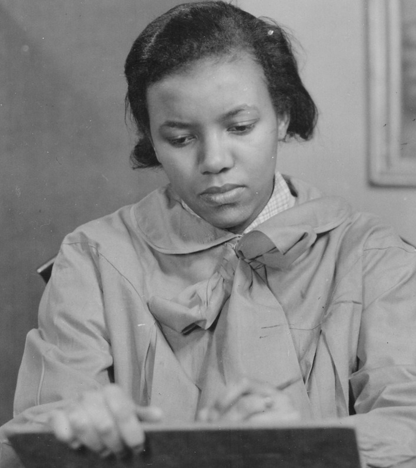

Augusta Savage
Personal history
Early Life
Augusta Christine Fells was born near Jacksonville, Florida, on February 29, 1892, to Edward Fells and Cornelia Murphy.
Augusta began making figures as a child, mostly small animals out of the natural red clay of her hometown.
Her father was a poor Methodist minister who strongly opposed his daughter's early interest in art.
"My father kicked me four or five times a week," Savage once recalled, "and almost whipped all the art out of me."
This was because he believed her sculpture to be a sinful practice, due to his interpretation of the "graven images" portion of the Bible.
She persevered, and the principal of her new high school in West Palm Beach, where her family relocated in 1915, encouraged her talent and allowed her to teach a clay modeling class.
This began a lifelong commitment to teaching, as well as to creating art.
Personal life
In 1907, at the age of 15, Augusta Fells married John T. Moore; they two had a daughter, Irene Connie Moore, who was born the following year, John died shortly thereafter.
In 1915, after moving to West Palm Beach, she met and married James Savage.
she retained the name Savage throughout her life, even after the two divorced in the early 1920s.
In 1923, Savage married Robert Lincoln Poston, a protégé of Marcus Garvey.
Poston died of pneumonia aboard a ship while returning from Liberia as part of a Universal Negro Improvement Association and African Communities League delegation in 1924.